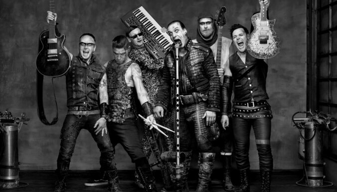
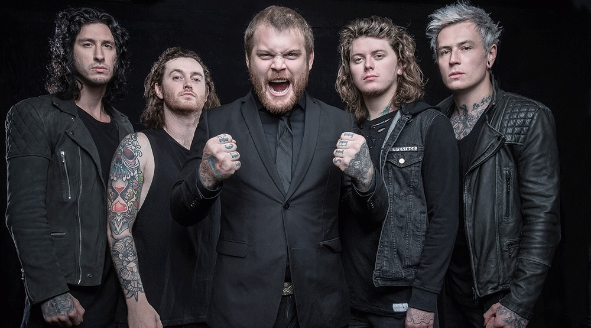

Rammstein (Раммштайн) — німецький
індастріал-метал гурт, створений взимку 1994-го року в Берліні. Їх музика належить до напряму «ноє дойче
герте» (нім. Neue Deutsche Härte, укр. нова німецька твердість). Також їх стиль часто описують як «грубу
силу», самі ж музиканти одного разу охарактеризували його як «танцювальний метал» (нім. Tanzmetall,
танцметал). Увагу медіа часто привертає використання піротехніки на концертах. У своїй творчості гурт
був
натхненний, зокрема, словенським музичним колективом «Laibach» («Лайбах»). Наразі продано понад 35
мільйонів
платівок гурту, який, незважаючи на німецькомовні тексти, має комерційний успіх, зокрема, у Сполучених
Штатах.
 ADEPT —
шведський гурт, що грає в стилі
пост-хардкор. На даний момент до групи входять музиканти Роберт Юнг (вокал), Густав Літхаммер
(лід-гітара) і
Філіп Бренделіус (бас-гітара). Група була заснована у 2004. У тому ж році випустили своє перше демо
«Hopeless Illusions». Їх перший міні-альбом «Hopeless Illusions», випущений роком пізніше.
Через великий успіх і швидко зростаючої популярності на батьківщині групи, лейбл «Panic & Action»
запропонував контракт групі. 4 лютого 2009 група випустила свій перший повноформатний альбом під назвою
«Another Year of Disaster». У 2010 році музиканти виступили з гастролями у Німеччині з групою Her Bright
Skies, яка теж уклала контракт з «Panic & Action». Тур складався з 6 концертів в Гамбурзі, Берліні,
Оснабрюке, Мюнхені, Штутгарті і Кельні. У серпні 2010 року група почала роботу над наступним альбомом.
Музиканти працювали з Фредеріком Нордстремом, досвідченим музичним продюсером, який мав досвід роботи з
In
Flames, Bring Me The Horizon і At The Gates. 11 березня 2011 ADEPT випустили свій другий альбом під
назвою
«Death Dealers». У тому ж році група випустила сингл "Riot In Everyone". Пісня є кавером групи
Crashdiet. 22
березня 2013 вийшов третій студійний альбом під назву « Silence the World».
В 2015 році заявили про те, що хочуть записувати музику іншого стилю й через це покидають лейбл та
будуть
самі записувати альбом Sleepless. Однак, пізніше заявили, що підписуються на лейбл Napalm Records.
Альбом
вийшов 19 лютого 2016 року.
29 серпня 2016 перед туром по Росії та Білорусі гурт записав відеозвернення, у якому заявив про те, що
гітарист Джеррі Репо та ударник Габріель Хеллмарк покинуть гурт після туру.
ADEPT —
шведський гурт, що грає в стилі
пост-хардкор. На даний момент до групи входять музиканти Роберт Юнг (вокал), Густав Літхаммер
(лід-гітара) і
Філіп Бренделіус (бас-гітара). Група була заснована у 2004. У тому ж році випустили своє перше демо
«Hopeless Illusions». Їх перший міні-альбом «Hopeless Illusions», випущений роком пізніше.
Через великий успіх і швидко зростаючої популярності на батьківщині групи, лейбл «Panic & Action»
запропонував контракт групі. 4 лютого 2009 група випустила свій перший повноформатний альбом під назвою
«Another Year of Disaster». У 2010 році музиканти виступили з гастролями у Німеччині з групою Her Bright
Skies, яка теж уклала контракт з «Panic & Action». Тур складався з 6 концертів в Гамбурзі, Берліні,
Оснабрюке, Мюнхені, Штутгарті і Кельні. У серпні 2010 року група почала роботу над наступним альбомом.
Музиканти працювали з Фредеріком Нордстремом, досвідченим музичним продюсером, який мав досвід роботи з
In
Flames, Bring Me The Horizon і At The Gates. 11 березня 2011 ADEPT випустили свій другий альбом під
назвою
«Death Dealers». У тому ж році група випустила сингл "Riot In Everyone". Пісня є кавером групи
Crashdiet. 22
березня 2013 вийшов третій студійний альбом під назву « Silence the World».
В 2015 році заявили про те, що хочуть записувати музику іншого стилю й через це покидають лейбл та
будуть
самі записувати альбом Sleepless. Однак, пізніше заявили, що підписуються на лейбл Napalm Records.
Альбом
вийшов 19 лютого 2016 року.
29 серпня 2016 перед туром по Росії та Білорусі гурт записав відеозвернення, у якому заявив про те, що
гітарист Джеррі Репо та ударник Габріель Хеллмарк покинуть гурт після туру.Asking Alexandria — британська музична група, зібрана в 2008
році в місті Йорк, Великобританія. З моменту початку співпраці з лейблом Sumerian Records в 2009 році
переїхала в США, випустила 5 студійних альбомів, останній з яких побачив світ 15 грудня 2017 року.
На ранньому етапі творчості, поряд з Attack Attack !, була популяризатором жанру електронікор, породивши
цілу хвилю груп-послідовників. Однак, починаючи з альбому From Death To Destiny, повністю відмовилася
від
подібного звучання і іміджу, зробивши крок в бік сучасного металкор і альтернативного року з деякою
часткою
впливу хард-року та хеві-метала.